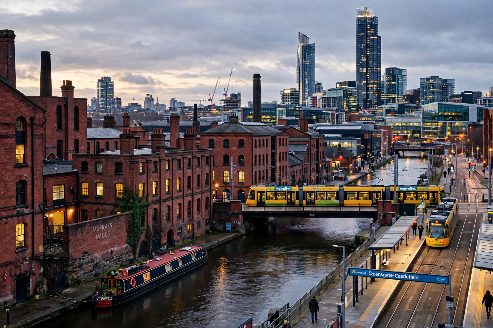

Manchester is a city in Greater Manchester, England, with a population of about 550,000 (over 2.8 million in the wider metropolitan area).

ManchesterOriginating as Roman Mamucium, Manchester became the world's first industrialised city during the Industrial Revolution — "Cottonopolis" for its textile mills, canals and warehouses. The Bridgewater Canal (1761) and Liverpool and Manchester Railway (1830, the first inter-city passenger railway) symbolise its rise. The Peterloo Massacre (1819) occurred here.
Home to Manchester United and Manchester City football clubs, a famed music scene (Joy Division, The Smiths, Oasis), two major universities, and the Museum of Science and Industry. The city was devastated by an IRA bomb in 1996 and rebuilt its centre; the Manchester Arena bombing occurred in 2017. See Industrial Revolution, Greater Manchester.